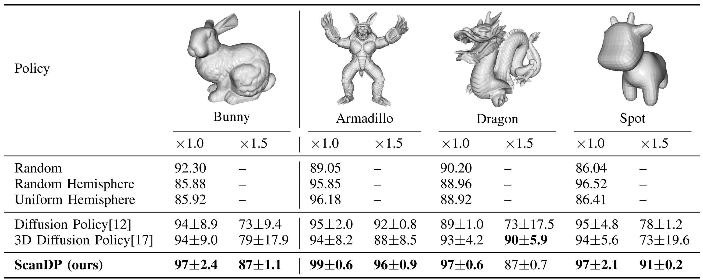
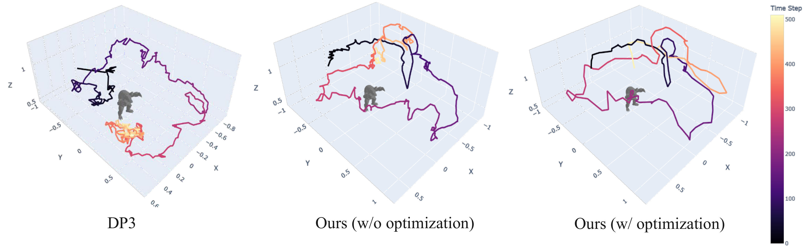
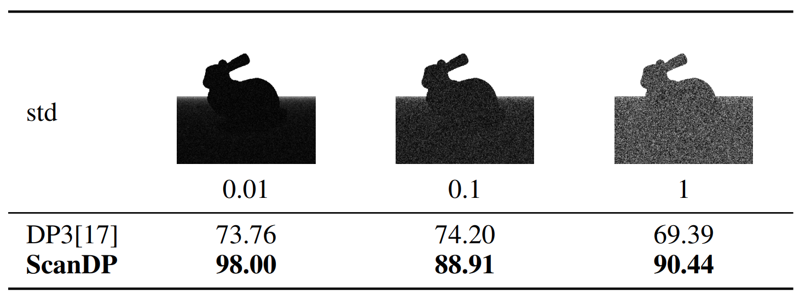
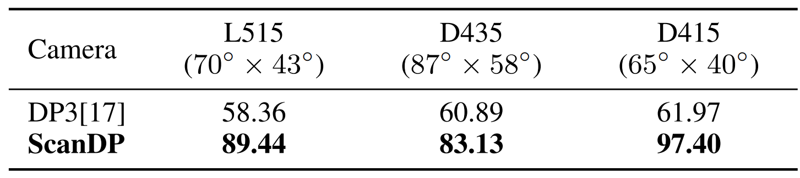
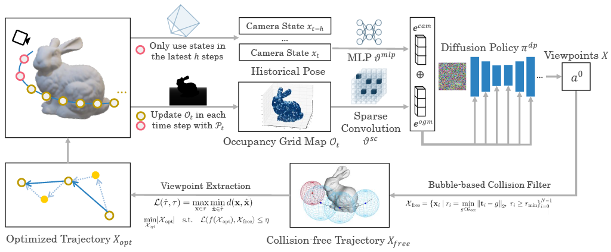

Abstract
Learning-based 3D Scanning plays a crucial role in enabling efficient and accurate scanning of target objects. However, recent reinforcement learning-based methods often require large-scale training data and still struggle to generalize to unseen object categories. In this work, we propose a data-efficient 3D scanning framework that uses Diffusion Policy to imitate human-like scanning strategies. To enhance robustness and generalization, we adopt the Occupancy Grid Mapping instead of direct point cloud processing, offering improved noise resilience and handling of diverse object geometries. We also introduce a hybrid approach combining a sphere-based space representation with a path optimization procedure that ensures path safety and scanning efficiency. This approach addresses limitations in conventional imitation learning, such as redundant or unpredictable behavior. We evaluate our method on diverse unseen objects in both shape and scale. Ours achieves higher coverage and shorter paths than baselines, while remaining robust to sensor noise. We further confirm practical feasibility and stable operation in real-world execution.

All policies are trained only on trajectories scanning the Stanford Bunny. Coverage is shown in mean $\pm$ std. We find that ScanDP consistently achieves the highest coverage while maintaining low variance.

ScanDP with path optimization attains the shortest path length and smoothest movement. We find that DP3 tends to get stuck in a particular location when scanning objects not seen during training.

Coverage [%] under noisy inputs.

Coverage [%] under different FoV.
Method Overview

BibTeX
@article{YourPaperKey2024,
title={Your Paper Title Here},
author={Itsuki Hirako and Ryo Hakoda and Yubin Liu and Matthew Hwang and Yoshihiro Sato and Takeshi Oishi},
journal={Conference/Journal Name},
year={2024},
url={https://your-domain.com/your-project-page}
}